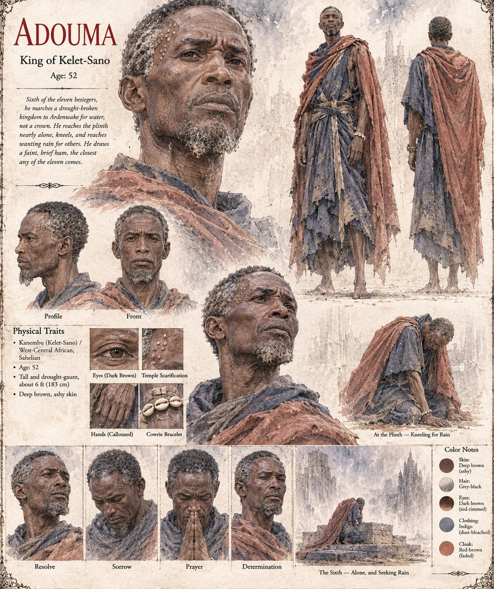

Adouma
King of Kelet-Sano · sixth of the eleven besiegers · 52 years old
King of Kelet-Sano, a kingdom that has not seen a proper rain in four years and whose physicians have stopped measuring the granaries because there is nothing left in them worth the arithmetic. He comes to Ardenwake on a single desperate rumor: that the blade once saved an entire valley in a single morning and might do the same for a kingdom with nowhere else to ask. Ardenwake's defenders let him through rather than fight him, since starving men do not besiege effectively and the march has already cost him two-thirds of his force. He reaches the plinth all but alone and kneels as his mother taught him to kneel before rain that refused to come, reaching for Valeria wanting, with nothing performative left, only water for people who were not himself. By the Vigil's own uncertain reckoning it is the closest any of the eleven comes: a hum, faint and brief, gone before a second breath could confirm it, because even a want with no self visibly attached is still a want.
The sheet gives his age as 52 and draws him tall and drought-gaunt, about 6'0", with deep brown ashy skin, close-cropped hair grey at the temples, a short grey-black beard, dark red-rimmed eyes, raised scarification dots at both temples and a cowrie-shell bracelet of kingship, in a dust-bleached indigo wrapper and a threadbare red-brown cloak; it shows him kneeling at the plinth for rain. Its expressions are resolve, sorrow, prayer and determination. The manuscript gives him no description; the sheet's culture line reads Kanembu (Kelet-Sano).